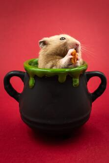

Low Maintenance
Hamsters are relatively low maintenance pets.
They require minimal grooming, don't need to be walked outside,
and can be easily cared for in a small living space.
Educational Value
Adopting a hamster can be a valuable learning experience, especially for children.
They can learn about responsibility, empathy, and develop a sense of compassion by taking care of a living creature.

Space Efficient
Hamsters are small animals, making them ideal for homes with limited space.
They can be comfortably housed in a cage or enclosure, requiring less area compared to larger pets.
Affectionate Companions
Despite their small size, hamsters can form strong bonds with their owners.
They are known to be affectionate,
enjoy human interaction, and can provide companionship.

Entertaining
Hamsters are playful and entertaining pets.
They love to explore, run on exercise wheels, and create tunnels.
Watching their antics can bring joy and amusement to both children and adults.